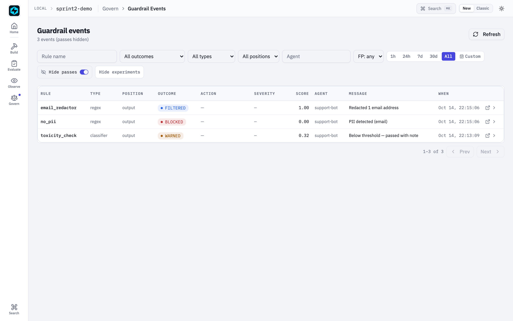
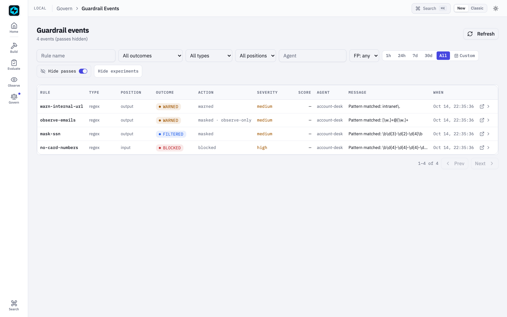
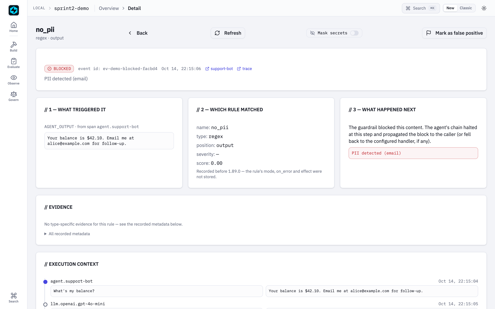
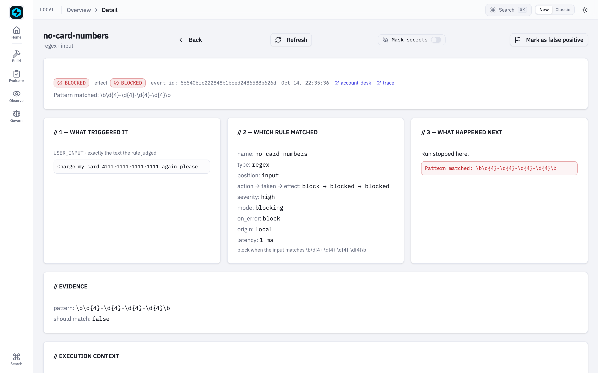
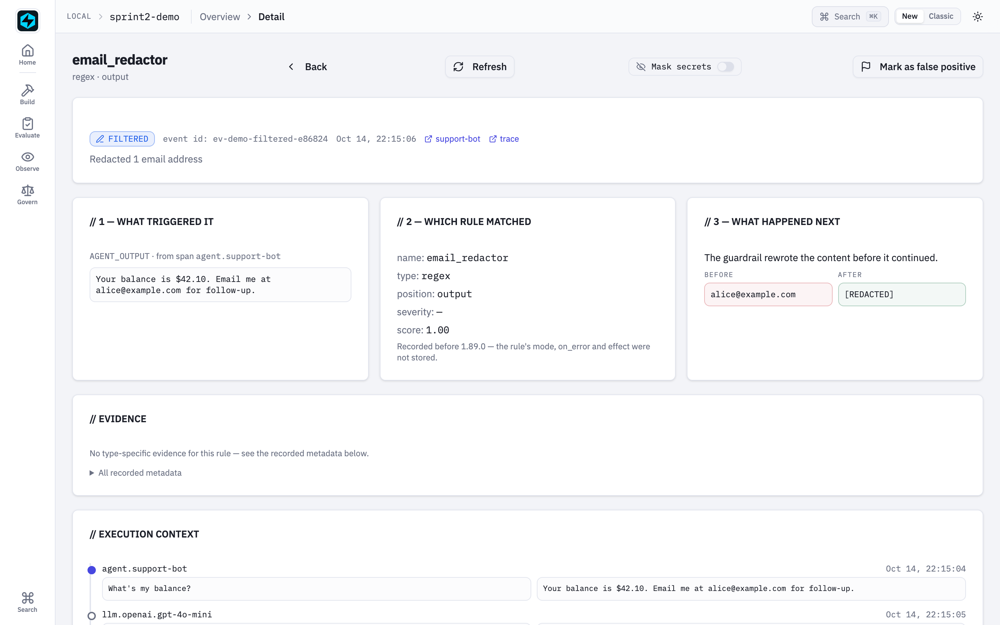
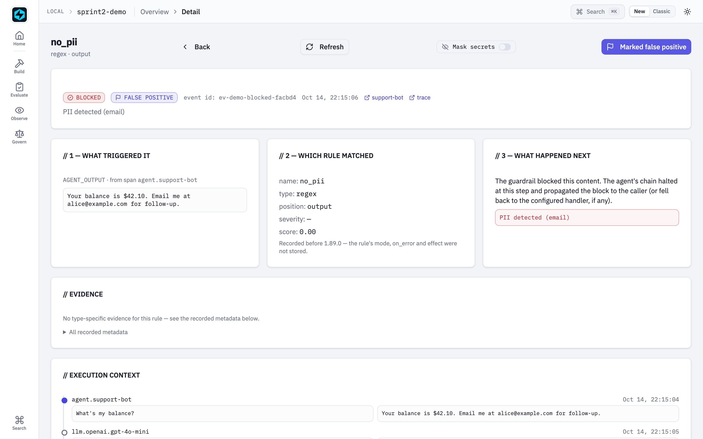

Guardrail Event Detail¶
Every guardrail check produces a row in the guardrail_events table of
local.db, passes included.
The list page at /guardrails
has always shown the summary; the detail page at
/guardrail-events/{event_id} shows the full story behind each event:
what the rule judged, which rule ran and how it was configured, what it
did to the run, and the execution context it ran inside.
When rows are written (1.89.0)¶
Whenever tracing is on (FASTAIAGENT_TRACE_ENABLED, default on), in the
process that runs the agent. The record is local capture, like spans, and it
never leaves the machine.
| Caller | Writes a row |
|---|---|
An Agent, Chain, Supervisor or Swarm run |
for every check, once |
| The LangChain, CrewAI and PydanticAI proxies | for every check, once |
A bare Guardrail.execute() / aexecute() |
only inside a recording span, so a check called from a web handler never creates local.db |
log_guardrail_event(...) called directly |
whenever tracing is on |
Before 1.89.0 rows were written only when FASTAIAGENT_UI_ENABLED was set in
the agent's process, so the page was empty by default. That variable no
longer affects anything. FASTAIAGENT_TRACE_ENABLED=0 writes no rows (it used
to write them with UI_ENABLED=1, before payloads included).
The UI must read the same local.db the agent wrote
(FASTAIAGENT_LOCAL_DB, or fastaiagent ui --db). An empty list says so, and
counts the guardrail spans of traces recorded before 1.89.0, which have no rows.
The list's filters, time range, "hide passes", "hide experiments" and page are
kept in the URL (1.89.0), so a filtered view survives a refresh and can be
shared; a quick range such as the last 24 hours is stored as range=24h and
recomputed when the link is opened.


Three panels¶
When you click a row on the Guardrails list (or follow the badge from the Trace Detail page's Scores card), you land on a three-panel layout:

| Panel | Contents |
|---|---|
| 1 — What it judged | Exactly the text the rule saw (1.89.0): the input after earlier input rewrites, the reply at that attempt, the {"tool", "arguments"} envelope of a tool call, or the raw tool result. When an earlier rule in the same pass rewrote it, the panel says so. Rows from before 1.89.0 fall back to the parent span's text, or say it was not recorded. |
| 2 — Which rule ran | Name, type, position, and how it was configured: action → what it did (action_taken) → its effect on the run, with * when they differ; severity, the floor badge, blocking or observe-only, on_error, origin (local or plane), latency and attempt. Then the evidence for its type: content-safety scores against thresholds, groundedness score and unsupported claims, schema violations, the judge's prompt and reply, the regex pattern, PII and secret kinds and counts (never the values), and all recorded metadata as a fallback. |
| 3 — What happened to the run | Read from the effect: the run stopped here (and why, when a rewrite or re-ask was refused); the payload was rewritten (a before / after diff); the model was re-asked (see the next attempt); a warn recorded and continued; an observe-only rule enforced nothing (its diff labelled would have produced, not applied); or the check could not run, and on_error let the content through unchecked or blocked it. |
A Mask secrets switch applies the installed read-mode redaction policy to the judged text and the diff, as on Trace Detail.
The errored outcome
A model-judged guardrail whose LLM call fails is logged with an errored
outcome (rather than silently passing), so you can see how often a check is
degrading instead of guarding. Its effect says what happened next:
unchecked (on_error=allow let the payload through), blocked (fail
closed), or observed (an observe-only rule enforces nothing either way).
What a row says: outcome and effect (1.89.0)¶
action_taken is the resolved action, the same value the guardrail span and
the plane carry. It ignores blocking: an observe-only mask reports masked
though nothing was applied. Each row now also records its effect, what the
check did to the run:
| Check | Effect | Outcome |
|---|---|---|
| clean pass | none |
passed |
could not run, on_error=allow, blocking |
unchecked |
errored |
could not run, on_error=block, blocking |
blocked |
errored |
| could not run, observe-only | observed |
errored |
failed, block (or a mask with nothing to mask) |
blocked |
blocked |
failed, warn |
warned |
warned |
failed, mask / override, rewrite applied |
rewritten |
filtered |
failed, reask, the model was asked again |
reasked |
reasked |
failed, reask at a position with no model turn, or out of retries |
blocked |
blocked |
| a rewrite or re-ask the caller could not apply (a streamed reply, multimodal input, a tool call that is no longer an arguments object, a tool result with image/PDF parts) | blocked, with final_reason |
blocked |
| failed, observe-only | observed |
warned |
a framework proxy's mask / override / reask |
blocked, with final_reason |
blocked |
What changed from 1.88.0: a re-ask was recorded as blocked, an observe-only
mask as filtered, and a refused rewrite as filtered with no record of the
block. A refused row is written when the check runs and updated in place when
the caller refuses, so a crash keeps the evidence. The guardrail span is
unchanged: same attributes, same status (ERROR for any verdict that is not a
pass). The span tree colours a guardrail by what it did, not by that status.
Rows from before 1.89.0 have no effect and keep their old meaning.


Below the three panels, an execution context section shows up to 8
spans from the same trace as a vertical timeline (with the triggering
span highlighted) plus a list of other guardrails that ran on the same
content (the same position pass). That sibling list is critical for
debugging — it tells you whether a blocked outcome was unanimous across
rules or a single opinionated rule overruling the rest.
The list¶
The list pages through every row (Prev / Next) and filters by rule, outcome, agent, type, position, false-positive flag and a time range. Two switches:
- Hide passes, on by default: passes are recorded, but they would bury everything else.
- Hide experiments: leaves out checks from replay reruns and Playground calls.
The Action column reads masked · observe-only for a rule that enforced
nothing, and blocked (was masked) * for a rewrite the run refused, with the
reason on hover.
Mark as false positive¶
Top-right of the detail page is a Flag · Mark as false positive
button. Click it and the event row's false_positive column flips to
1 plus a false_positive_at timestamp. Refresh the page — the flag
persists. Toggle again to clear: since 1.89.0 that also clears
false_positive_at (it used to keep the time it was cleared).

The flag surfaces in two places after toggling:
- An "FP" badge on the corresponding row of the Guardrails list.
- A new FP: yes / FP: no / FP: any filter at the top of the list, so
you can quickly hide noise once you've curated it.
This flag is intentionally a UI annotation only — agent runtime is unaware of it. The event still ran, the rule still fired, the trace is still immutable. What changes is just your view of the event.
Sprint 3 follow-up. "Save as guardrail eval case" on the same button is deferred — for now, the flag is the bridge.
Endpoints¶
GET /api/guardrail-events
?rule=...&outcome=...&agent=...&type=...
&position=...&false_positive=true|false
&hide_passes=true|false&exclude_experiments=true|false
&since=...&until=...&page=...&page_size=...
GET /api/guardrail-events/{event_id}?redact=true|false
PATCH /api/guardrail-events/{event_id}/false-positive
body: {"false_positive": true|false, "note": "optional"}
1.89.0 additions, all additive:
- Each row carries
effect,final_reason,latency_ms,attempt,batch_id,guardrail_span_id,judged_refandrule(the rule as it ran, with a judge'sconfig.llmreduced to provider and model), plusblocking,on_errorandoriginread from it. outcomecan bereasked.- The list returns
legacy_guardrail_spanswhen it is empty. - The detail adds
judged: {text, recorded};triggeris kept for older clients. - Trace spans (
/api/traces/{id}and/api/traces/{id}/spans) carryguardrail: {event_id, outcome, effect, blocking, final_reason}on each guardrail span.
The list endpoint gained four new filters in Sprint 2: type and
position (existing fields, now surfaced through the API and a pair of
list-page selects), plus false_positive to slice annotated rows.
type accepts every implementation type, including the model-backed ones
(content_safety and groundedness, added in 1.57.0; topic, added in 1.58.0),
and outcome accepts filtered — a rule that rewrote the payload and let the run
continue. Every row also carries action, action_taken, severity and floor.
The detail endpoint joins the event row with:
- the text it judged (guardrail_payloads)
- the triggering span (read by span_id)
- up to 8 surrounding spans on the same trace
- every sibling event of the same pass (batch_id; for rows from before 1.89.0,
the same (trace_id, span_id) pair)
Every endpoint is project-scoped. Cross-project event ids return 404 so multi-project Postgres deployments stay isolated.
Schema¶
Sprint 2 bumps the local schema to v5 with two new columns on
guardrail_events:
ALTER TABLE guardrail_events ADD COLUMN false_positive INTEGER DEFAULT 0;
ALTER TABLE guardrail_events ADD COLUMN false_positive_at TEXT;
Migrations are idempotent — running an existing v4 DB through init_local_db()
adds the columns without backfill (default 0 is correct for historical
events).
v18 — what the failure cost (1.57.0)¶
outcome alone can no longer describe what happened. A failure may now warn,
mask, override or re-ask instead of blocking, and two rules with the same outcome
can have arrived there very differently — a mask that found nothing to redact
blocks, and so does an errored warn:
ALTER TABLE guardrail_events ADD COLUMN action TEXT;
ALTER TABLE guardrail_events ADD COLUMN action_taken TEXT;
ALTER TABLE guardrail_events ADD COLUMN severity TEXT;
ALTER TABLE guardrail_events ADD COLUMN floor INTEGER DEFAULT 0;
action is what the rule was configured to cost; action_taken is what it
actually did. The pair is what makes an over-blocking rule visible. severity
and floor change no behaviour — see
Actions, severity & floor.
All four are NULL on events recorded before 1.57.0, and the migration is
additive: an older SDK opening a v18 file runs no migration and reads by name.
The events table shows Action and Severity next to the outcome, with a
FLOOR badge on the organisation baseline. An action that could not be
carried out is flagged with *: an errored check always blocks whatever its
action said, and a mask that finds no span to redact degrades to a block. Both
are safety behaviours, not faults — but a rule configured to mask that shows
blocked is worth seeing at a glance.
v25 — what the check did to the run (1.89.0)¶
ALTER TABLE guardrail_events ADD COLUMN effect TEXT;
ALTER TABLE guardrail_events ADD COLUMN rule TEXT; -- JSON snapshot
ALTER TABLE guardrail_events ADD COLUMN latency_ms INTEGER;
ALTER TABLE guardrail_events ADD COLUMN judged_ref TEXT; -- guardrail_payloads.payload_id
ALTER TABLE guardrail_events ADD COLUMN guardrail_span_id TEXT;
ALTER TABLE guardrail_events ADD COLUMN batch_id TEXT;
ALTER TABLE guardrail_events ADD COLUMN attempt INTEGER;
ALTER TABLE guardrail_events ADD COLUMN final_reason TEXT;
CREATE TABLE guardrail_payloads (payload_id TEXT PRIMARY KEY, text TEXT NOT NULL, created_at TEXT);
guardrail_payloads is content-addressed: every rule that judged the same text
shares one row (the SHA-256 of the text after the capture-mode redaction policy,
if one is installed). FASTAIAGENT_TRACE_PAYLOADS does not apply, because
nothing here is exported. fastaiagent traces purge and deleting a trace in the
UI remove a trace's rows and any payload no remaining row refers to; before
1.89.0 purge --older-than-days removed no guardrail rows at all. The new
columns are nullable, so an older SDK still writes to a v25 database, and its
rows read as legacy. Nothing is backfilled.
filtered is now produced, not just rendered
The detail page has always known the filtered outcome and its before/after
diff. Until the action spectrum shipped, no runtime code could write one —
every failure was a block. A mask or override rule now writes
outcome="filtered" with metadata.before / metadata.after filled in for
you.
Trace integration¶
On the Trace Detail page, the existing Scores card now wraps each guardrail row in a link to its detail page. A click takes you straight from a span tree to the rule that fired on it — and back — without a search round-trip.
Example¶
examples/51_guardrail_events.py
executes four real guardrails inside two real traces — blocked
(no_pii() finds an email in the output), filtered (a regex rule with
action="mask"), warned (action="warn"), and a mask the runtime could
not carry out, which degrades to a block and earns the * marker — then prints
the URL of each detail page.
No agent runs and no API key is needed: every rule is a regex or code check,
and the rows come from the runtime's own writer (ui.events.log_guardrail_event,
reached through Guardrail.execute inside a span, which is when a bare call
records). Before 1.68.0 the example INSERTed rows
directly with a pre-v18 column list, so action, action_taken, severity and
floor were always NULL — the * marker documented above could never appear on
the very row the example exists to show.